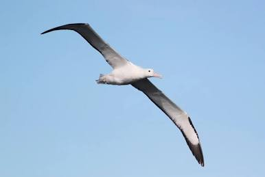

Richard Olsen is a filmmaker born and raised in the mountains and valleys of New England. He has always been drawn to bodies of water, from brooks and streams, to lakes and oceans. His curiosity for the world has led him to all seven continents in order to explore different cultures and the natural world. His research and work focuses on the human body, what it means to inhabit a body, and its connection to the environment around it.
